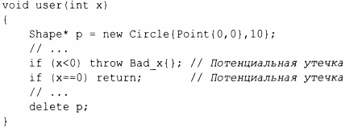
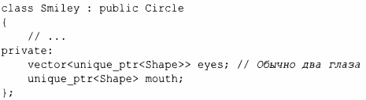
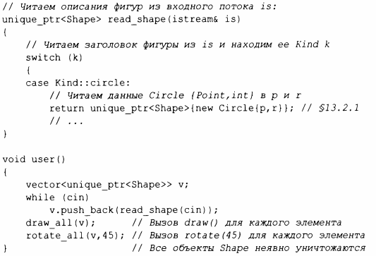

⇐4.5.2 Навигация по иерархии 4.6 Советы⇒
Опытные программисты должны были заметить, что я оставил открытыми три возможности для ошибок.
В этом смысле указатели на объекты, размещенные в свободной памяти, оказываются опасными: "обычный старый указатель" не должен использоваться для представления владения. Например:
Если только х не является положительным числом, мы получаем утечку. Присваивать результат выполнения оператора new "голому указателю" означает напрашиваться на неприятности.
Одним простым решением такого рода проблем является использование интеллектуального указателя стандартной библиотеки unique ptr (§ 13.2.1) вместо "голого указателя" там, где требуется удаление:
Это пример простой, общей и эффективной методики управления ресурсами (§5.3).
В качестве приятного побочного эффекта этого изменения нам больше не нужно определять деструктор для Smiley. Компилятор будет неявно генерировать деструктор, который выполнит требуемое уничтожение unique _ptr (§5.3) в векторе. Код, использующий unique_ptr, будет таким же эффективным, как и код с обычными указателями.
Теперь рассмотрим пользователей read_shape():
Теперь каждым объектом владеет unique_ptr, который удаляет свой объект, когда он больше не нужен, т.е. когда его unique_ptr выходит из области видимости.
Чтобы версия user() с использованием unique_ptr была работоспособна, нам нужны версии функций draw_all() и rotate_all(),которые принимали бы в качест.ве аргументов vector <unique _ptr<Shape>>. Написание множества таких _all()-функций может оказаться очень утомительным занятием; в §6.3.2 показано альтернативное решение.